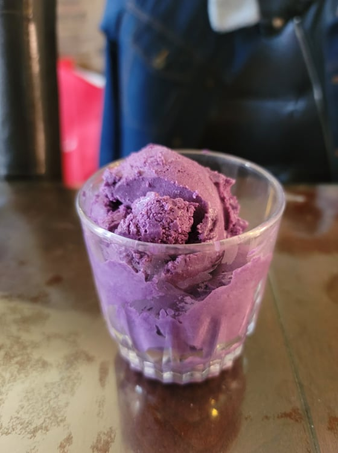

Ube Ice Cream

Ingredients:
- 1 cup Frozen grated ube
- 1 cup Milk
- 1 cup Heavy cream
- 1/2 cup Sugar
- 5 Eggs yolks
- 1 tsp Vanilla Extract
- 1/2 tsp Ube extract
- Optional: Macapuno or Shredded cheese
Instructions:
- Place the milk and heavy cream in a pot over medium-low to medium heat. Heat to below scalding/smoking.
- While the milk heats, whisk together the egg yolks and sugar in a bowl. Pour 1/4 of the milk into the eggs while whisking constantly. Add more milk if desired. Then pour the egg mixture into the pot with the rest of the milk while whisking constantly.
- Heat the milk mixture slowly while whisking until the temperature reads 170 degrees Fahrenheit. Then remove from the heat immediately.
- Mix in the grated ube, vanilla extract, and ube extract. Blend together with an immersion blender until homogenous. Transfer to a bowl and let chill in the fridge completely.
- When chilled completely, turn on the ice cream maker and pour in the mixture. Let churn until soft serve consistency, about 30-40 minutes. Add in optional add-ins a couple minutes before done churning. Transfer to a sealable container and let chill in freezer until firm.